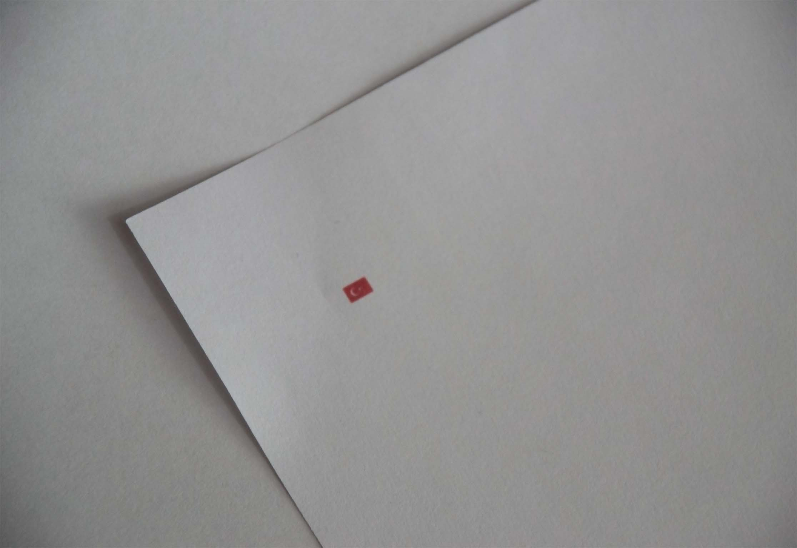
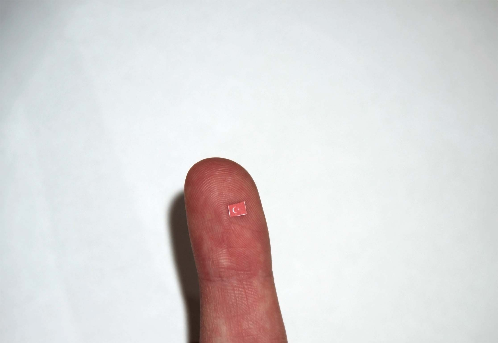

Flag as a Volatile Form, 2019



In an interview, Adorno claims that the fact that the rhythm of the composition in the National Anthem of the German Democratic Republic does not match the lyrics in a similar way to the "şafak-larda (at dawns)" in the Turkish National Anthem protects meaning against postmodern loss of meaning. The fact that every structure that can be built after the total rejection of meaning can exist by both breaking and establishing its contradictory essence is directly related to identity and the process of its construction. In this process, the flag symbol has taken its place as a concept that needs to be reorganized for me in terms of its relationship with my personal life. The flag is a volatile, intangible, spiritual form that should be flown in terms of its purpose (Dalgalan sen de şafaklar gibi ey şanlı hilal! - So ripple and wave, like dawning skies, oh glorious crescent!), but because it is flown, it is law-like, volatile, and intangible, as opposed to being fixed and static.